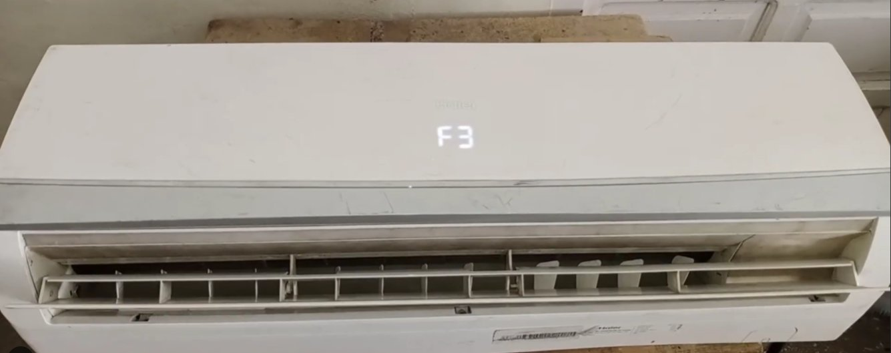
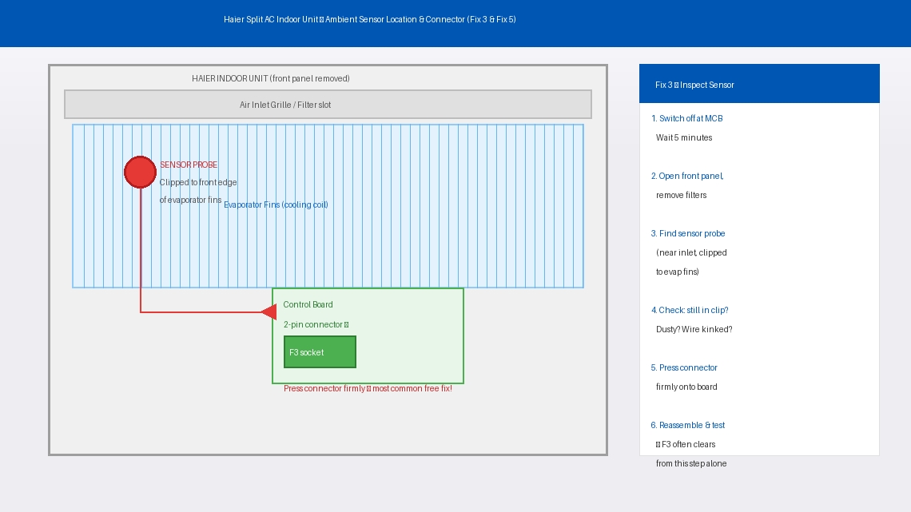
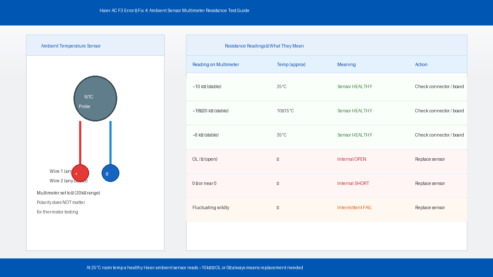
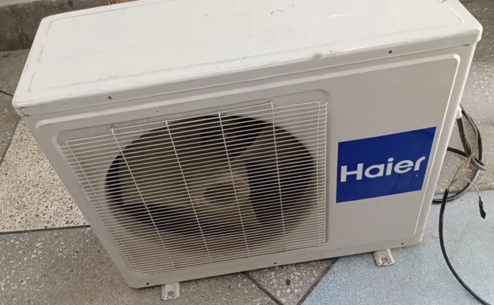
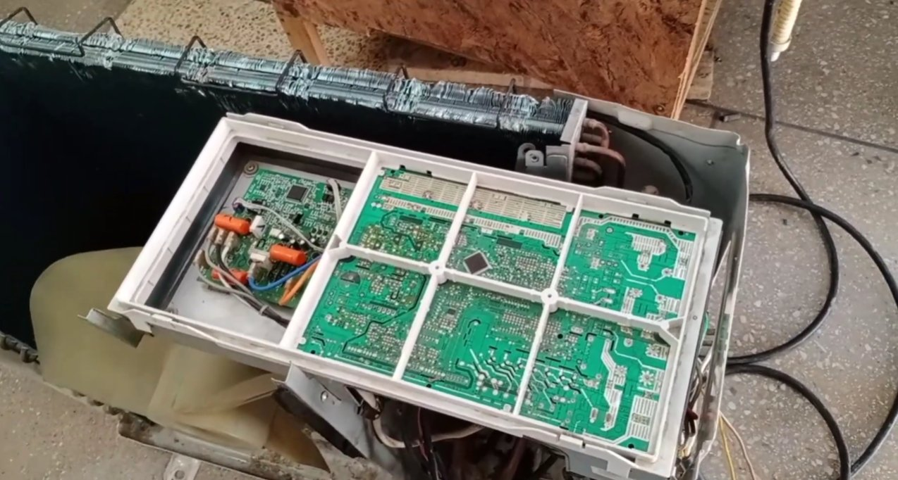

Haier AC F3 Error Code: What It Means and How to Fix the Sensor
F3 on a Haier air conditioner means the indoor ambient temperature sensor is sending a reading outside the acceptable range — typically because the sensor is dirty, has a loose connector, or has failed. This error almost never means the compressor is damaged or the refrigerant has leaked. The sensor itself costs under ₹300, and in many cases it doesn't even need replacing — just cleaning and reseating.
What Does the F3 Error Code Mean on a Haier AC?
What this actually means, F3 on a Haier air conditioner means the indoor ambient temperature sensor has sent a reading to the control board that falls outside the acceptable range — either far too high, far too low, or no reading at all (open circuit).
Your Haier AC has multiple temperature sensors working together. One of the most important is the indoor ambient temperature sensor — a small thermistor (a resistor whose resistance changes with temperature) that continuously measures the room temperature near the air inlet of the indoor unit. The control board uses this reading to decide how hard to run the compressor, when to cycle cooling on and off, and when the target temperature has been reached.
When this sensor sends back a reading the control board considers impossible or dangerously out of range — typically below -30°C or above 85°C in terms of the electrical signal received — the board shuts down the cooling cycle to protect the compressor and displays F3.
The three most common reasons this happens:
- The sensor has physically failed — its internal resistive element has broken down due to age, moisture ingress, or a power surge, sending a garbled signal
- The sensor’s wiring connector has come loose or corroded at the control board — the board receives no signal and interprets the absence of data as a fault
- The sensor is coated in dust or positioned incorrectly against the return air grille, causing it to read a wildly inaccurate ambient temperature
In a smaller number of cases, F3 can also appear when the control board itself has developed a fault and is misreading a perfectly healthy sensor — but this is always the last thing to investigate, not the first.

Tools You’ll Need
You won’t need everything for every fix — but having these within reach saves multiple trips:
- A Phillips head screwdriver
- A soft brush or clean dry paintbrush
- A clean dry cloth
- A multimeter (essential for Fix 4 — widely available online for ₹300–₹600)
- A small flashlight or torch
- Needle-nose pliers (optional — for reseating wire connectors)
- About 20–30 minutes of your time
Step-by-Step Fixes (Most Likely Fix Listed First)
Work down the list — fixes are ordered by how often they succeed.
Before touching a single screw, give your Haier AC a proper hard reset. A temporary voltage spike, a power cut, or a brief sensor misread during startup can lock the control board into an F3 fault state even when the sensor itself is perfectly healthy.
- Turn the AC off using the remote.
- Walk to your electrical distribution board and switch off the MCB (miniature circuit breaker) or fuse that powers the AC circuit. Do not just use the remote or unit’s power button — this needs to be a complete power cut.
- Wait a full 5 minutes. The control board needs this time to fully discharge and clear its fault memory. Thirty seconds is not enough.
- Switch the MCB back on.
- Turn the AC on with the remote and watch the display for 60 seconds.
- If the unit starts cooling normally without F3 returning, a temporary electrical glitch was the cause. Monitor over the next few cycles — if F3 comes back, continue to Fix 2.
This fix sounds too simple to work — but it resolves F3 more often than people expect. When the air inlet grille and filter are heavily clogged, the ambient sensor starts reading stale, recirculated warm air instead of fresh room air. The resulting exaggerated reading can fall outside the sensor’s acceptable range and trigger F3.
- Switch off at the MCB and wait 2 minutes.
- Open the front panel of the indoor unit — it usually hinges upward or forward. On most Haier split AC models, no screwdriver is needed for this step.
- Slide out the mesh air filters — there are typically two, one on each side.
- Hold the filters up to a light source. If the mesh is visibly grey and you cannot see clearly through it, they are overdue for cleaning.
- Take the filters outside and gently tap them to dislodge loose dust. Rinse them under running water from the back side, using a soft brush for stubborn buildup.
- Shake off excess water and allow to dry completely — at least 20–30 minutes — before reinstalling. A wet filter inside a running AC can grow mould and cause further sensor misreadings.
- Use your soft brush to gently dust the evaporator fins visible behind the filter slots. Do not press hard — fins bend easily.
- Reinstall the dry filters, restore power at the MCB, and test.
If cleaning didn’t resolve it, the next step is to find the sensor and check its physical condition. A sensor that has slipped out of its mounting clip, been pinched by a panel, or accumulated thick lint will behave erratically regardless of how well the rest of the unit functions.
- Switch off at the MCB and wait 5 minutes.
- Open the front panel and remove the air filters.
- On most Haier split AC indoor units, remove 2–4 screws along the bottom edge of the plastic housing to access the internal components.
- Locate the ambient temperature sensor — a small cylindrical or teardrop-shaped probe, about the size of a large pea, attached to a thin two-wire cable. It is usually clipped to the front edge of the evaporator fins near the air inlet.
- Inspect closely with your flashlight: Is it still firmly in its clip? Is it coated in dust or lint? Is the wire kinked or pinched? Any moisture or corrosion where the wire meets the sensor body?
- If the sensor has come loose, firmly press it back into its mounting clip. It should sit snugly against the fin surface.
- If dusty or coated, gently clean with a dry soft brush. Don't use water or sprays on the sensor itself.
- Trace the sensor wire to its two-pin connector on the control board. Press this connector in firmly — a half-seated connector is one of the most common causes of F3 and is completely free to fix.
- Reassemble, restore power at the MCB, and test.

If the sensor looks physically fine but F3 persists, the sensor may have failed internally — its resistive element has broken down and is sending the wrong electrical signal to the board. A multimeter test confirms this in under five minutes.
- Switch off at the MCB and wait 5 minutes.
- Access the indoor unit’s internal components and disconnect the sensor’s two-pin connector from the control board.
- Set your multimeter to resistance mode (Ω) — start with the 20kΩ range.
- Touch the multimeter probes to the two pins of the sensor connector (either way around — polarity doesn’t matter for a thermistor).
- At typical Indian room temperature (around 25°C), a healthy Haier ambient temperature sensor should read approximately 10kΩ (10,000 ohms), stable and not fluctuating.
- Interpret your reading:
- Around 10kΩ and stable: Sensor is healthy — problem is likely a connector issue or control board fault (see Fix 6)
- “OL” or infinite resistance: Sensor has broken open internally — replace the sensor
- 0Ω or near-zero: Sensor has internally short-circuited — replace the sensor
- Wildly jumping values: Sensor is failing intermittently — replacement recommended

If your multimeter confirmed the sensor has failed, replacement is the fix. Haier ambient temperature sensors are inexpensive, widely available, and straightforward to swap.
- Note your unit’s model number and search for the replacement sensor at a Haier authorised service centre or online parts retailers. Haier ambient sensors typically cost ₹200–₹500 depending on the model.
- Switch off at the MCB and wait 5 minutes before proceeding.
- Access the internal components and disconnect the old sensor’s two-pin connector from the control board.
- Unclip the sensor probe from its mounting bracket or evaporator clip — it usually pulls free with gentle, firm pressure.
- Thread the new sensor’s wire through the same routing path as the old one — follow the original wire path exactly so it doesn’t get pinched when the panel is closed.
- Clip the new sensor probe into the same position as the old one — firmly seated against the evaporator fin or in its mounting bracket.
- Connect the new sensor’s two-pin connector to the same socket on the control board. It should only fit one way.
- Reassemble the unit and restore power. The F3 error should be gone and cooling should resume normally within a minute or two of startup.

If you’ve reached this step — the sensor tests healthy at approximately 10kΩ, the connector is firmly seated, the filters are clean, and F3 still appears — the problem has moved from the sensor to the control board itself. A board that has suffered component failure or surge damage can misread a healthy sensor’s signal and incorrectly throw F3.
This is the point to stop DIY troubleshooting. Control board diagnosis and replacement requires the right test equipment, the correct replacement board for your exact model, and experience with AC electronics to install safely. Contact Haier’s service team to arrange a board inspection.

When to Call a Professional
F3 is one of the more manageable Haier error codes for home troubleshooting, but there are clear situations where professional help is the right call:
- The sensor tests healthy (~10kΩ) but F3 keeps returning after reconnecting everything properly. This points directly to a control board issue — beyond DIY scope.
- You find a physically damaged wire — frayed insulation, a burn mark, or a connector with melted plastic. Damaged AC wiring requires a qualified electrician.
- F3 appears alongside other error codes like F1, F2, or E6 simultaneously. Multiple concurrent errors indicate a systemic fault — board failure, power supply issue, or a refrigerant-side problem — that needs professional diagnosis.
- The unit is making unusual noises (grinding, rattling, or high-pitched squealing) in addition to F3. These symptoms together suggest something beyond a sensor fault.
- Your AC is still within its warranty period. Haier offers a 1-year comprehensive warranty and a 5-year compressor warranty on most split AC models in India. Attempting internal repairs yourself can void this coverage — contact Haier before opening the unit if it’s under a year old.
To reach Haier support in India:
Website: haier.com/in/service-support
Toll-free: 1800-200-9999 (Monday to Saturday, 9 AM to 6 PM)
Have your model number, serial number, and purchase invoice ready when you call.
Quick Summary
| Fix | Difficulty | Time Needed |
|---|---|---|
| Hard reset via MCB (5 minutes off) | Very Easy | 5 minutes |
| Clean air filters and inlet grille | Easy | 20 minutes |
| Locate, inspect, and reseat the sensor | Easy | 15 minutes |
| Test sensor resistance with multimeter | Moderate | 10 minutes |
| Replace the ambient temperature sensor | Moderate | 20 minutes |
| Control board assessment | Professional | — |
Start at the top and work your way down. The F3 error clears at Fix 1 or Fix 3 for the majority of Haier AC owners — a reset or a reseated sensor connector is all it takes. Only pick up that multimeter if the simple steps haven’t worked, and only think about a board fault if the sensor itself tests healthy.
Cleared your F3 with one of these steps? Fix 3 — pressing the sensor connector firmly back onto the control board — is the one that surprises most people. It takes ten seconds and costs absolutely nothing. Always check it before buying a replacement part.